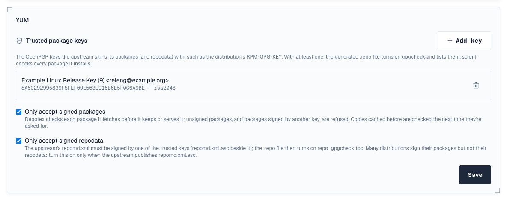

YUM repositories serve RPM packages to dnf, yum, microdnf and zypper. Hosted repositories take binary and source RPMs and generate repodata (repomd.xml with primary, filelists and other metadata), signed with the repository's own key, and list a comps.xml, updateinfo.xml or modules.yaml you upload. Proxy repositories cache Rocky Linux, EPEL or a vendor's repository; groups combine them and sign the merged repodata with the group's key.
1. Add the repository
sudo dnf config-manager --add-repo https://depotex.example.com/repository/my-space/rpm/depotex.repo
sudo dnf install helloThe .repo file turns on repo_gpgcheck, so dnf checks the repodata's signature with the repository's key. For a private space, write the file with your credentials (username= and password= with an API token) instead of adding it by address. The repository's Usage tab shows these commands with your address filled in.
2. Private spaces and dnf5
dnf5 (Fedora 41 and later) doesn't send username= and password= when it downloads the key named by gpgkey=, so in a private space the key download is refused and dnf5 can't check the repodata. Put the credentials in the key's address instead (yum and dnf 4 work either way):
gpgkey=https://<user name>:<API token>@depotex.example.com/repository/my-space/rpm/public.key3. Publish a package
curl -f -u "me:$DEPOTEX_TOKEN" --upload-file hello-1.0-1.el9.x86_64.rpm \
https://depotex.example.com/repository/my-space/rpm/Packages/hello-1.0-1.el9.x86_64.rpm- Upload with Publish permission, to any path ending in .rpm. The package's own header is read and decides its name, version and dependencies; a file that isn't an RPM is refused.
- Upload comps.xml, updateinfo.xml or modules.yaml the same way to have them listed in the repodata (package groups, advisories, modules).
- repodata/ is generated and can't be uploaded; it updates on the next dnf makecache after an upload. New YUM repositories publish once.
4. Several distributions in one repository
On the repository's Settings tab, Repodata depth decides where repodata is generated. 0 (the default): one for the whole repository. 1: one per top folder, so el8/ and el9/ are each a repository of their own (…/rpm/el9/depotex.repo); 2 and more go deeper. Packages must be at least that deep. Changing it moves every package to another address, so set it before clients use the repository.
5. Signing
- Repodata: every hosted YUM repository and group signs its repomd.xml with its own OpenPGP key. Signing key on the Settings tab shows it and lets admins rotate it or import their own, published beside the current key for an overlap (14 days by default) before it signs, as for APT. dnf picks up the new key from gpgkey= in the .repo file by itself (with -y, or after asking); a machine whose gpgkey= points at a local copy needs the new key before the switch.
- Packages: Depotex doesn't re-sign RPMs; they keep the signature their builder gave them (rpmsign). Under Trusted package keys, add the public keys your packages are signed with: the .repo file then turns on gpgcheck with those keys, and dnf refuses packages they didn't sign.
- Require signatures: with this on, uploads must be signed by one of the trusted keys; unsigned packages, packages signed by another key and tampered packages are refused. Packages stored before you turned it on aren't checked again.
6. Versions and policies
- Each version-release of a package is a version in Depotex, compared the way rpm does (~ and ^ included; ~ marks a pre-release). Cleanup policies, quotas, quarantine and the block list apply to it.
- Blocked versions are left out of the repodata and their files refused; quarantined versions too when the repository hides them.
7. Proxy repositories
Add an upstream with the Rocky Linux 9 BaseOS, Rocky Linux 9 AppStream or EPEL 9 preset, or any repository's address (the folder that holds repodata/), allow it for the space, then create a proxy repository. Its repodata passes through untouched, so dnf checks it with the upstream's own keys rather than Depotex's; repodata files named by their checksum are verified. A proxy can also reach a YUM repository of another Depotex (Depotex link).
To have Depotex check the upstream itself, add the upstream's keys on the proxy's Settings tab under Trusted package keys (for Rocky Linux 9, RPM-GPG-KEY-Rocky-9), then turn on what to check:
- Only accept signed packages: every package the proxy fetches must be signed by one of the keys before it's kept or served. Unsigned packages and packages signed by another key are refused (upstream_unsigned, upstream_signature_invalid); copies cached before are checked the next time they're asked for.
- Only accept signed repodata: the upstream's repomd.xml must be signed by one of the keys (repomd.xml.asc). Many distributions sign their packages but not their repodata, so turn this on only when the upstream publishes repomd.xml.asc.
- With keys, the proxy's .repo file turns on gpgcheck with them (and repo_gpgcheck with signed repodata), so dnf checks too, and a group with the proxy as a member lists its keys.
- Changes raise yum.settings.update.

8. Groups
A YUM group merges its members' repodata into its own, signed with the group's key, keeping each package from the first member that has it, and merges package groups and advisories. Its .repo file trusts every member's trusted package keys, its proxies' included. Uploads to a group go to the member its rules choose.
9. Vulnerabilities
Set the repository's Distribution release under its Settings (for example rhel-9, rocky-9, almalinux-9, sles-15.6, opensuse-leap-15.6 or azurelinux-3.0, Pro): each binary package is then checked against that release's advisories, by its own name and its source RPM's (advisories use either) and with its epoch, and shows on its Security tab. Red Hat Enterprise Linux, Rocky Linux, AlmaLinux, SUSE Linux Enterprise, openSUSE Leap and Tumbleweed, Azure Linux, Amazon Linux (amzn-2023, amzn-2), Fedora (fedora-43) and Oracle Linux (ol-9) are supported. For RHEL, the standard stream: fixes published only for EUS, E4S or AUS aren't looked up. For SLES, the advisories of every SUSE product of the service pack (the server, its modules and extensions) count, as an SBOM doesn't say which products are installed.
10. In the artifact browser
Packages show by name, then their versions, with each file's checksums.
11. Limits
- No delta RPMs, zchunk or SQLite repodata: dnf uses the XML repodata. Generated repodata is gzip-compressed, which every yum and dnf reads; groups also read members' zstd, xz and bzip2 repodata (Fedora's proxies included).
- Groups join members' modules.yaml without removing duplicates.
- Proxies verify only repodata files named by a SHA-256 checksum.
- The browser doesn't show a package's dependencies yet.